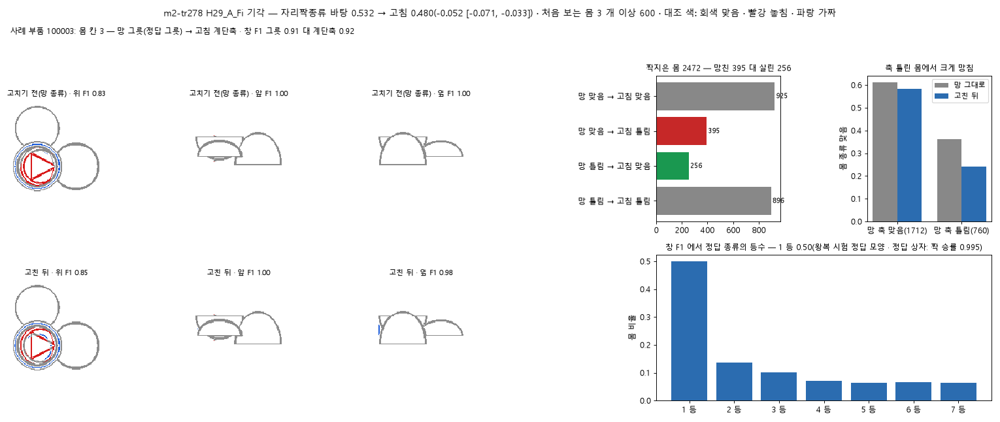

실험 m2_tr0278_h029_종류고침
목표 G1.2 view 모음 → 파츠별 CAD code(CadQuery · 그 전 「3 면도 → 파츠별 CAD」 · 지금 M2 는 위 · 앞 · 옆 고정 세 장만 받음 → 아무 각도 N 장으로 바꿀 것 · 11-20) · G1 첫 제품 — 피규어 · 메카 사진 여러 장 + 치수 → 숨은선 3 면도 + 파츠별 CAD · G0 임의의 이미지 → CAD 코드 · 빌린 가정 3: 생성기기하 · 정답3D · 정사영 · 갚는 계획: 탐색 · 생성기 부품 · 몸 3 개 이상 600(tr277 과 같음) · 숫자는 tr277 이 실루엣에 맞춘 것 — 오르면 개수 고치기(f7)와 붙여 진척판 세 자 · 정형 대신 속 숫자 맞추기 · 흐린 view · m1 view 로 버팀(Sc) · 목표 시험지 값: 안 잼 (!)
바탕 망이 낸 몸마다 그 자리 상자에 7 종류 정형 모양을 넣어 다시 그리고, 그 몸 근처 창에서 입력과 가장 같은 종류로 바꾸면, 처음 보는 부품의 자리짝종류가 오르나?
판정 · H29 기각(자리짝종류 -0.052 [-0.071, -0.033]) — 망 몸 자리마다 7 종류 정형을 그 상자로 늘려 넣고 다시 그림 창 F1 로 고르면 바탕 망보다 나빠짐(0.532 → 0.480 · 망 숫자 상자면 0.252) · 정답 종류가 창 점수 1 등인 몸이 반뿐 · 망 축 틀린 31 % 에서 크게 망침 · 다음: 원인 가르기(Ce) — 같은 600 에서 축만 · 상자만 · 모양만 정답으로 바꿔 정답 종류 1 등 비율이 어디서 오르나
| 가설 | 주장 | 결과 | 근거 |
|---|---|---|---|
| H29 | 몸 자리마다 7 종류를 넣어 다시 그린 창 F1 로 종류를 고르면 바탕 망보다 자리짝종류가 오른다 | 기각 | 바탕 0.532 → 고침 0.480 · 같이 팔 A(망 숫자 상자) 0.252 · 묶음겹침 0.713 → 0.646 · 짝지은 몸 2,472: 망 맞음 → 고침 틀림 395 대 틀림 → 맞음 256 · 망 축 틀린 몸 760(31 %) 종류 맞음 0.361 → 0.242 · 축 맞은 몸 1,712 0.611 → 0.582 · 창 F1 에서 정답 종류 1 등 0.50 · 왕복 F1 중앙값 정답 1.0(자 검사) · 맞춘 0.727 · 고친 0.749 · 오류 0 |
분석
한 줄로
물음: 바탕 망이 낸 몸마다 그 자리 상자에 7 종류 모양을 넣어 다시 그리고, 그 몸 근처에서 입력과 가장 같은 종류로 바꾸면, 처음 보는 부품의 자리짝종류가 오르나?
답: 오히려 내려간다 — 판정은 기각. 몸 3 개 이상 600 부품에서 0.532 → 0.480(차 -0.052 [-0.071, -0.033]). 맞던 몸 395 개를 틀리게 바꾸고, 틀린 몸 256 개만 살렸다.
왜 이 실험을 했나
m2-tr277 에서 망 숫자를 실루엣에 맞추면 다시 그림이 틀린 부품을 가려내기 시작했다(AUC 0.745). 그리고 왕복 시험(조사 claudedocs/research_구조불변량_20261121.md)에서는 몸 묶음 · 종류 · 속 모양을 정답으로 주면, 합친 그림 점수가 같은 자리의 다른 종류를 짝 승률 0.995 로 가려냈다. 바탕 망의 틀림은 「대략 맞는 자리 근처의 다른 종류」(tr275 · 276)다. 그래서 자리마다 종류를 다시 그림 점수로 고르면 나누기 뒤 종류가 맞을 거라고 봤다. 우리 목표는 그림 → CAD 코드이고, 그 안에서 지금 병목이 몸 나누기다.
바꾼 것 하나
몸 종류를 다시 그림 점수로 고른다. 망이 낸 몸마다(큰 몸 먼저) 7 종류의 정형 모양(학습 생성기에서 그 종류 · 축의 첫 몸)을 그 몸 상자로 늘려 넣고 다시 그린다. 그 몸 상자를 6 화소 넓힌 창 안에서 입력과 가장 같은 종류를 고른다. 몸 상자 숫자는 tr277 이 실루엣에 맞춘 것이다. 있음 · 자리 · 축은 망 것 그대로고, 부품 600 개 · 자(f7 진척판 자리짝종류)도 tr277 과 같다.
결과

| 이 실험(고침) | 대조(바탕 망) | 목표 | 넘었나 | |
|---|---|---|---|---|
| 자리짝종류(600 부품) | 0.480 | 0.532 | 차 ≥ +0.05 · 구간 아래 > 0 | 아니오(기각) |
자리짝종류는 망이 낸 몸과 정답 몸을 자리로 짝지은 뒤, 종류가 같은 몸의 비율이다. 정답이면 1.0, 종류를 무작위로 내면 0.145 다(자 검사).
왜 이렇게 나왔나
확인한 것
- 다시 그림 창 점수가 정답 종류를 1 등으로 꼽는 몸이 반(0.50)뿐이다. 왕복 시험의 0.995 와 크게 다르다.
- 망이 축을 틀린 몸(760 · 31 %)에서 더 크게 망쳤다. 종류 맞음 0.36 → 0.24. 축이 맞은 몸은 0.61 → 0.58. 다만 축 틀린 몸은 망 종류부터 덜 맞던 몸이라(0.36 대 0.61) 축 탓인지는 이 셈으로 못 가른다.
- 후보를 망의 상위 2 종류로만 좁혀도 0.528 로 바탕보다 낮다(판정 뒤 저장 점수로 다시 셈 · 근사). 후보 수가 아니라 점수 자체가 망의 순위보다 나쁜 신호다.
- 고친 그림은 입력에 조금 가까워졌다(다시 그림 F1 0.727 → 0.749). 그림이 더 같아져도 종류는 더 틀린다.
짐작 (아직 확인 안 함)
- 정형을 망의 틀린 축으로 눕혀 넣어 맞는 종류도 안 맞는다(축 탓) — 위 상관만 있고 바꿔 넣어 본 적 없음.
- 왕복 시험과 다른 것은 넷이다 — 정형 모양(속 숫자 · 구멍이 정답과 다름) · 맞춘 상자 · 망 축 · 창 안의 이웃 몸 선. 어느 것이 점수를 망가뜨리는지는 아직 가르지 않았다.
한계
- 600 부분집합이다(tr277 맞춘 숫자가 600 에만 있음) · 진척판 고정 시험지 2,024 로는 못 잼.
- 있음 · 개수 · 축은 고치지 않았다. 큰 몸부터 하나씩 바꿔서 앞 선택이 뒤 점수에 섞인다.
배운 것과 다음
다시 그림 점수는 정답 모양 · 정답 상자일 때만 종류를 가려낸다 — 정형 모양 · 맞춘 상자 · 망 축으로는 망의 자기 순위보다 못하다.
- 원인 가르기(Ce): 같은 600 에서 축만 · 상자만 · 모양만 정답으로 바꿔, 정답 종류가 창 점수 1 등인 비율이 어디서 0.50 에서 오르는지 본다.
- 오르는 칸이 축이면 축을 먼저 고치고(세 축 다 넣어 보기), 모양이면 종류마다 속 숫자를 맞춘 뒤 점수를 매긴다(f7 tr277 「후보마다 맞추고 다시 그림」).
실험 기록
- 카드(돌리기 전 커밋 33f2c580 · H29_A_Fi · 식 · 판정식) · 고치기.py(시험 · 자검사 · 흐름 · 재기 · 결과그림) · 번호는 m2 담당 f7 세션이 잡아 줌(f7 은 같은 걸 짜지 않고 개수 고치기를 봄).
- 자 검사 「자리짝종류」 새로 통과(오라클 1.0 · 종류 1 · 2 개 틀림 0.753 · 0.507 · 무작위 0.145 · 칸 순서 무관) — 처음엔 제 검사 코드가 자리 칸까지 덮어써 오라클 0.41 이 나왔고, 고친 뒤 통과.
- 보이는 선만 첫 맞음으로 쏘는 그리기(숨은선88 과 화소까지 같음 검사) · 정형 21 개 미리 지어 부품당 54 초 → 3 초.
- 같이 잰 것: 망 숫자 상자로 고친 팔 0.252 · 묶음겹침 0.713 → 0.646 · 몸 수별(3 · 4 · 5 · 6 개) 0.649 → 0.612 · 0.574 → 0.500 · 0.468 → 0.426 · 0.389 → 0.332 · 정답 칸으로 지은 몸 왕복 F1 1.0(자 검사).